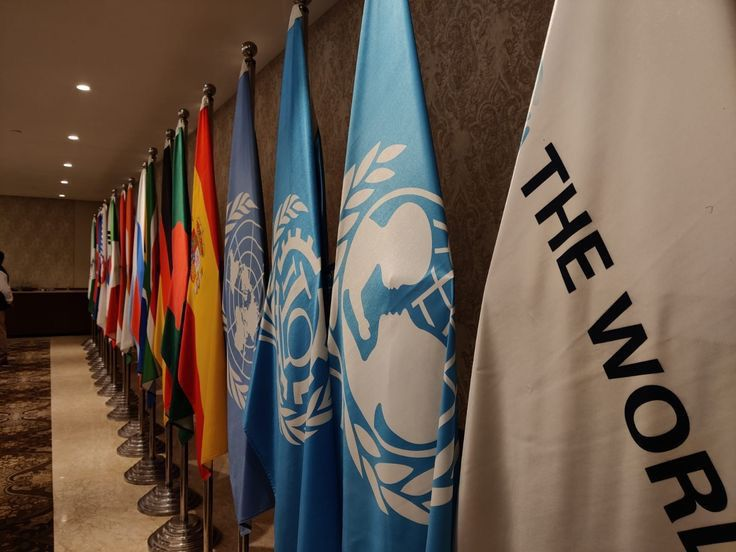
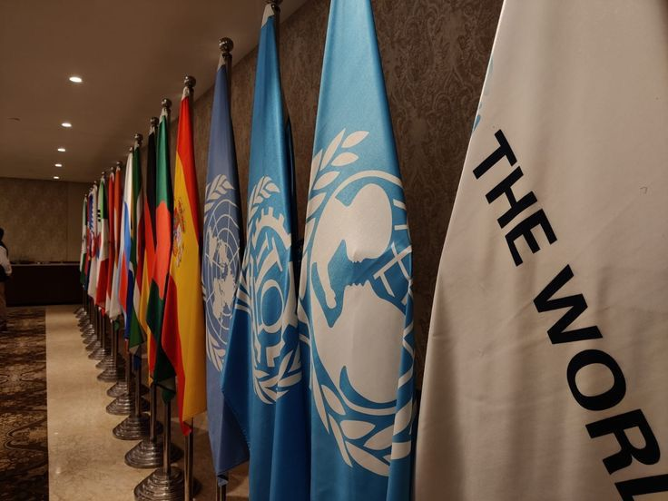

Kerja sama bilateral (Indonesia-Chile) dan SDGs
Kerja sama bilateral adalah kerja sama antar negara yang hanya melibatkan 2 negara yang bekerja
sama untuk mencapai tujuan yang sama. Kerja sama ini dapat terjadi di berbagai bidang yang berbeda-beda.
Apa negara yang saya pilih untuk tugas ini?
Saya memilih negara Chile sebagai negara yang sudah berkali-kali menlaksanakan kerja sama
bilateral dengan Indonesia, sampai kedua negara ini membuat perjanjian perdagangan yang disebut
dengan perjanjian IC-CEPA (Indonesia-Chile Comprehensive Economic Partnership Agreement)
Apa yang akan saya bahas dalam website ini terkait kerja sama bilateral Indonesia-Chile?
Saya akan membahas tentang kerja sama Indonesia dan Chile dalam bidang ekonomi, terutama terkait
perjanjian perdagangan ekonomi IC-CEPA dan bagaimana hal itu dapat mendorong ekonomi kedua negara
dan juga memperkuat hubungan diplomatis antara Indonesia dan Chile. Saya juga akan membahas bagaimana
hal ini dapat menguntungkan kedua negara bukan hanya di Indonesia, namun juga di kawasan-kawasan yang lain
juga.
Apa SDGs yang saya pilih untuk tugas ini?
Saya memilih SDGs 8, atau "Pekerjaan Layak dan Pertumbuhan Ekonomi" yang bertujuan untuk membangun Pertumbuhan
ekonomi yang stabil dan membangun bagi negara-negara. SDG 8 mengakui pentingnya pertumbuhan ekonomi berkelanjutan dan
tingkat produktivitas ekonomi yang tinggi untuk penciptaan lapangan kerja berkualitas dengan upah yang baik dan menyerukan
kesempatan untuk pekerjaan penuh dan pekerjaan layak bagi semua.
Mengapa kita harus memperhatikan pertumbuhan ekonomi dan lapangan kerja?
Pertumbuhan ekonomi sangat penting bagi negara untuk dapat berkembang dan meningkatkan kesejahteraan
rakyatnya. Salah satu cara untuk meningkatkan pertumbuhan ekonomi adalah dengan mempermudah kegiatan
perdagangan, menurunkan tarif ekspor-impor. Pertumbuhan ekonomi juga memastikan banyaknya lapangan kerja
yang tersedia, membuat masyarakat untuk dapat menghidupi keluarganya.
Perkembangan negara
Kesejahteraan masyarakat
Kesejahteraan ekonomi global
Isu Global yang terkait kesenjangan ekonomi
Beberapa tantangan global yang terkait dengan masalah-masalah ekonomi di berbagai negara meliputi:
Kesenjangan ekonomi: Banyak negara berkembang, termasuk Indonesia, menghadapi kesenjangan akses
pendidikan, terutama di daerah terpencil dan pedesaan.
Dampak Pandemi COVID-19: Pandemi meningkatkan angka putus sekolah dan memperburuk kesenjangan akses terhadap
teknologi pendidikan.
Kurangnya Tenaga Pendidik Berkualitas: Banyak negara mengalami kekurangan guru dengan pelatihan dan
kompetensi
yang memadai.
Peran Indonesia dalam Kerjasama dengan Chile
Sebagai negara yang sedang berkembang, Indonesia dan Chile telah menjalin hubungan kerja sama
sejak lama. Indonesia memiliki berbagai peran dalam hubungan bilateral ini, terutama pada sektor
ekonomi, contohnya adalah :
Perjanjian perdagangan
Indonesia dan Chile memiliki perjanjian perdagangan bebas bilateral (IC-CEPA) yang berlaku sejak 10 Agustus 2019.
IC-CEPA merupakan perjanjian pertama antara Indonesia dan negara Amerika Latin. Perjanjian ini bertujuan untuk menjadikan
Chile sebagai hub produk ekspor Indonesia di Amerika Latin.
Mengurangi tarif impor
Indonesia mengurangi tarif impor untuk ribuan produk, meningkatkan ketersediaan produk-produk yang
tersedia dari Chile dan Indonesia. Hal ini dapat meningkatkan tingkat jual-beli dari kedua negara
dan meningkatkan kegiatan ekonomi, dengan meningkatnya kegiatan perdagangan, tingkat ekonomi pun dapat
meningkat.
Membuka peluang bagi masyarakat dalam sektor jasa
Indonesia dan Chile keduanya membuka peluang bagi masyarakatnya yang bekerja dalam sektor jasa
agar mereka dapat memperluas lapangan kerja mereka ke negara lain. Hal ini dapat meningkatkan
lapangan kerja bagi kedua belah pihak, memungkinkan masyarakat untuk mendapatkan pekerjaan yang layak
Bentuk Kerjasama Regional
Sebagai anggota ASEAN, Indonesia dan Singapura berkolaborasi dalam kerangka kerja regional:
Program Beasiswa ASEAN: Mendukung siswa berbakat di kawasan ASEAN untuk belajar di negara-negara anggota,
termasuk Indonesia dan Singapura.
Penguatan Pendidikan STEM di ASEAN: Proyek bersama untuk mempromosikan pembelajaran berbasis STEM di seluruh
wilayah ASEAN.
Bentuk Kerjasama Multilateral
Indonesia dan Singapura juga bekerja sama dalam platform multilateral, termasuk:
Inisiatif Pendidikan UNESCO: Mendukung program pendidikan global, seperti pengembangan teknologi pendidikan
dan peningkatan akses pendidikan di daerah terpencil.
Program PBB tentang Pembelajaran Digital: Kerjasama untuk memperkenalkan teknologi pembelajaran berbasis
digital di sekolah-sekolah Indonesia.
Hubungan Sebab-Akibat: SDGs dan Kerjasama Internasional
Kerjasama internasional memegang peranan penting dalam pencapaian SDGs, termasuk Pendidikan Berkualitas.
Hubungan sebab-akibat antara keduanya dapat dilihat melalui:
Dampak Kerjasama terhadap SDGs:
Peningkatan Kompetensi Guru: Program pelatihan yang dilakukan Singapura membantu meningkatkan kualitas
pengajaran di Indonesia, mendukung indikator SDGs
Infrastruktur Pendidikan: Teknologi yang diperkenalkan Singapura, seperti platform e-learning, membantu
Indonesia memenuhi indikator
Dampak SDGs terhadap Kerjasama:
Tantangan yang dihadapi Indonesia dalam mencapai SDGs, seperti ketimpangan akses pendidikan, mendorong
pemerintah untuk mencari mitra strategis, salah satunya Singapura.
Mekanisme Penghubung:
Transfer Teknologi: Teknologi pendidikan dari Singapura diterapkan di sekolah-sekolah Indonesia.
Pelatihan dan Pendampingan: Singapura membantu memberikan pendampingan untuk meningkatkan kualitas guru dan
tenaga pendidikan Indonesia.
Dampak Positif Kerjasama Bagi Masyarakat Indonesia
Peningkatan Mutu Pendidikan:
Guru dan kepala sekolah yang telah mengikuti pelatihan menerapkan metode pembelajaran inovatif di kelas,
yang berdampak pada peningkatan hasil belajar siswa.
Pengurangan Kesenjangan Akses:
Implementasi teknologi pendidikan membantu menjangkau siswa di daerah terpencil, memastikan akses pendidikan
yang lebih merata.
Penguatan Pendidikan Vokasi:
Kerjasama dengan ITE Singapura memperkuat pendidikan vokasi di Indonesia, meningkatkan keterampilan teknis
siswa, dan membantu mereka mendapatkan pekerjaan yang layak.
Peningkatan Daya Saing Global:
Siswa yang terlibat dalam program pertukaran pelajar memiliki wawasan internasional yang lebih baik,
menjadikan mereka lebih kompetitif di pasar kerja global.
Nilai Pancasila yang Diterapkan
Kemanusiaan yang Adil dan Beradab:
Program ini memastikan pendidikan yang adil dan inklusif untuk semua.
Persatuan Indonesia:
Kolaborasi ini mempererat persatuan nasional melalui pemerataan akses pendidikan.
Gotong Royong:
Semangat gotong royong terlihat dalam kolaborasi antar negara untuk mencapai tujuan bersama.
Kesimpulan dan Saran
Kesimpulan
Kerjasam a Indonesia dan Singapura adalah contoh nyata bagaimana kolaborasi internasional dapat
mempercepat pencapaian SDGs, khususnya Pendidikan Berkualitas. Melalui pelatihan, transfer
teknologi, dan pertukaran pelajar, Indonesia dapat meningkatkan mutu pendidikan, yang pada akhirnya
meningkatkan kesejahteraan masyarakat.
Saran
Perluasan Skala Program: Pemerintah perlu memperluas cakupan program, terutama di daerah terpencil.
Optimalisasi Teknologi: Lebih banyak sekolah harus mengadopsi teknologi pendidikan dari Singapura.
Evaluasi dan Pengawasan: Program kerjasama perlu dievaluasi secara berkala untuk memastikan
keberlanjutannya.
Saran ini realistis dan dapat diterapkan mengingat komitmen Indonesia dan Singapura untuk memperkuat
hubungan bilateral.


.png)
.png)
.png)
.png)
.png)
.png)
 
